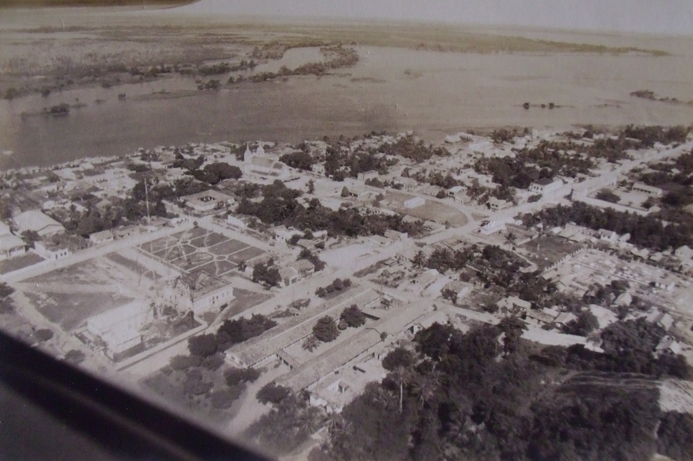
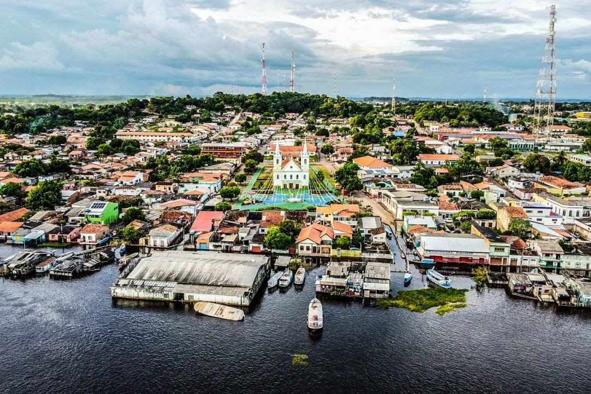

Alenquer
Quase três séculos de história entre o rio Surubiú, as serras esculpidas pelo vento e as festas que atravessam gerações. Este é o portal oficial para conhecer, visitar e celebrar a nossa cidade.
Geografia e Território
Alenquer fica na Mesorregião do Baixo Amazonas, na margem norte do rio homônimo, cercada por igarapés, serras e uma extensa floresta que molda o modo de vida ribeirinho.
A sede municipal está a aproximadamente 68 km de Belém em linha reta e mantém forte ligação com Santarém através do rio Amazonas, principal via de acesso e escoamento da região. A altitude média da cidade é de 52 metros, e as coordenadas oficiais são 01°56'30" sul e 54°44'18" oeste.
História e Fundação
Da antiga aldeia de Surubiú à cidade que hoje celebra sua identidade ribeirinha.
O território que hoje é Alenquer teve origem em uma aldeia tupi chamada Surubiú — nome que remete ao rio dos surubis. No século XVIII, missionários capuchinhos estabeleceram ali uma sede de catequese, atraindo o povo indígena Arabés, que posteriormente se fixou às margens do rio de mesmo nome.
Em 1758, por determinação do governador do Grão-Pará, Francisco Xavier de Mendonça Furtado, o povoado foi elevado à categoria de vila e passou a se chamar Alenquer, em referência à cidade portuguesa. A denominação foi posteriormente ratificada pela Carta Régia de 6 de junho de 1775. Mais de um século depois, em 10 de junho de 1881, o município foi elevado à categoria de cidade — data celebrada até hoje como aniversário de Alenquer.
Ontem e hoje
Contraste entre os registros históricos e a Alenquer contemporânea.

